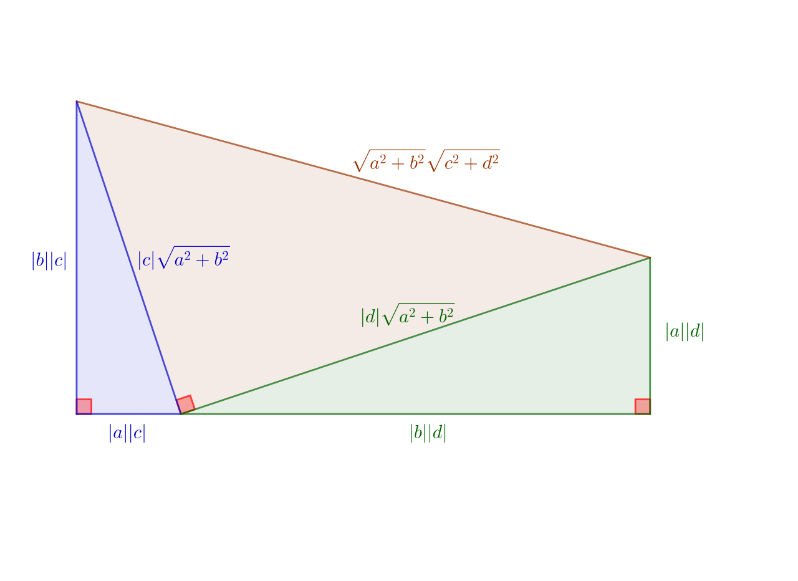

La prépa scientifique, l'informatique et les mathématiques.
Bonjour madame ! Aujourd'hui boubou il va tout bien et il est tout amoureux de toi :)
Ça fait quelques jour que boubou il s'intéresse aux formules de Taylor et il comprend de mieux en mieux ! Je vais essayer d'expliquer un peu :
Déjà, les différentes formules de Taylor permettent de donner des approximations d'une fonction autour d'un point et elles sont toutes composées de deux parties majeures :
Dans le livre, on me donne la formule de Taylor-Lagrange, c'est le polynôme \begin{align} P(a) & = \sum_{k=0}^{n - 1} \frac{f^{(k)}(a)}{k!} (x - a)^k \end{align} auquel on ajoute le reste \begin{equation} R_n(x) = \frac{(x-a)^n}{n!} f^{(n)}(\xi) \end{equation} Finalement ça donne \begin{equation} f(x) = P(x) + R_n(x) \end{equation} Et du coup, tout ça, ça permet de donner une approximation d'une fonction sur un endroit précis. L'écriture des formule est loin d'être rigoureuse, mais je me suis dit que c'est mieux de ne pas en rajouter pour que tu puisses comprendre au moins un tout petit peu.
J'ai pas encore complètement compris cette formule mais je vais beaucoup m'y intéresser !
Voilà, je sais que tu t'en fous mais je te raconte quand même ça parce que c'est ce que j'aime bien :)
Moi je suis tout content qu'on puisse se faire un week-end en amoureux, je t'aime <3
Aujourd'hui boubou il a beaucoup lu son livre et il est content parce qu'il a bien travaillé :) Cette fois je vais pas te raconter ce que j'apprends parce que c'est une partie des maths qui n'est pas très intéressante et parce que je viens juste de commencer à m'y mettre donc je comprends pas tous les enjeux.
La journée elle était un petit peu chiante et j'étais pas trop bien mais ça allait mieux quand t'es venue me voir et en plus t'étais toute rigolote et mignonne et t'avais tout plein d'énergie :) T'es un gros bébé d'amour que j'aime.
Moi je voulais un peu te voir demain mais je suis quand même content que tu vas être avec ton copain :) Et je suis content parce que j'arrive à le supporter de mieux en mieux et puis je le dis pas trop parce que c'est pas très gentil mais je suis beaucoup content que tu sois amie avec un garçon pas bizarre (dans le sens péjoratif) et qui soit conscient de l'importance des choses. D'un copain adulte, quoi.
Voilà c'est tout je t'aime mon gros bébé <3
Bonjour madame :) Boubou il écrit cette partie la le 4 aout au lieu du 3 aout parce qu'il s'est endormi pendant que tu lui racontais tes aventures dans Omori :)
Hier j'ai passé une bonne journée et c'est tout bien d'aller dans la piscine toute chaude ! J'ai un peu discuté avec ma tatie, avec mon cousin et j'ai mangé du saucisson :)
Notre soirée elle était toute bien, moi j'aime bien prendre des douches avec toi, j'aime bien te raconter des trucs, j'aime bien quand tu me racontes des trucs et t'es un amour tout gentil et en plus t'es ma grosse dinde :)
Voilà je suis content qu'on soit restés ensemble et j'ai hâte de te revoir <3
Bonjour encore mon bébé :) Aujourd'hui boubou il a fait beaucoup de maths. Il a fini de lire le premier chapitre du livre, il a fait quelques démonstrations et il a passé beaucoup de temps sur l'inégalité de Cauchy-Schwarz, pour comprendre une certaine notation, je suis content parce que j'ai appris beaucoup de chose :)
Avant de t'expliquer toute mes bêtises je veux te dire que je t'aime beaucoup et que j'ai hâte de te faire des gros calins d'amour demain <3
Maintenant je vais t'expliquer un peu ce qui j'ai appris !
D'abord, j'ai ré-appris les fondamentaux des nombres complexes dans le livre. C'est bien parce que plus je les re-découvre et mieux je les comprends ! Au début en maths expertes je connaissais pas trop, puis après quand j'ai lu mon livre je comprenais un peu mieux, et maintenant que je le relis je les comprends tout bien et j'arrive même à faire les démonstrations des propriétés de base :)
Un nombre complexe c'est un nombre composé de deux réels : $(a, b)$. Le $a$ s'appelle la partie réelle et le $b$, la partie imaginaire. Par exemple, pour $z = (2, 8)$, la partie réelle de $z$ est $2$ et la partie imaginaire est $8$. Et en fait, la force de ce nombre, c'est qu'il est "en 2D". Un complexe au niveau géométrique, c'est un point sur un plan ! Du coup, ça permet de manipuler des outils d'analyse de façon plus poussée, avec une dimension en plus, qui permet de représenter une information en plus. C'est un gain de temps. C'est par exemple ce qui permet à Basile de bouger sur la map ! C'est ce qui permet au développeur d'Omori de créer un effet de mirroir pour une scène particulière, c'est ce qui permet de dire qu'il y a une collision entre ton personnage et le mur sur Splatoon, etc.
Ensuite j'ai étudié l'inégalité de Cauchy-Schwarz. C'est une inégalité qui permet de dire si la structure sur laquelle tu travailles est un espace euclidien (un espace ou la notion de distance est intuitive), elle permet de trouver des angles (trigonométrie), mais principalement, et permet d'établir une relation d'ordre entre un objet et un autre, grâce au produit scalaire. Sa formule fait un peut peur mais en fait c'est simple (je supprime les symbôles un peu compliqués pour pas alourdir le truc et pour que je puisse te l'expliquer simplement après) : \begin{equation} |\sum{ab}|^2 \leq \sum{|a|^2} \sum{|b|^2} \end{equation} Je connais deux démonstrations pour cette équation, mais je vais te donner la plus simple. Elle se base sur un outil qu'on apprend à utiliser en première, c'est les polynômes de degré 2. \begin{align} P(x) & = \sum{(|a| + x|b|)^2} \\ & = \sum{(|a|^2 + 2x|a||b| + x^2|b|^2)} \\ & = \sum{|a|^2} + 2x\sum{|a||b|} + x^2\sum{|b|^2} \end{align} $P$ est un polynôme de degré 2 positif. Grâce à une formule apprise en première, on trouve : \begin{equation} (\sum{|a||b|})^2 \leq \sum{|a|^2} \sum{|b|^2} \end{equation} Et c'est exactement l'inégalité qu'on recherche !
Et du coup, cette formule permet par exemple de dire que le produit scalaire d'un vecteur $u$ par un vecteur $v$ est inférieur au produit des normes de $u$ et $v$ ! \begin{equation} |\langle u, v \rangle| \leq ||u|| \cdot ||v|| \end{equation} Graphiquement, ça veut dire que le trait du bas est plus petit que le trait du haut :  Voilà ! J'ai pas fini de tout raconter, il y a encore plein de trucs mais ça va devenir éprouvant pour toi après, pauvre bébé. À domiiiin :)